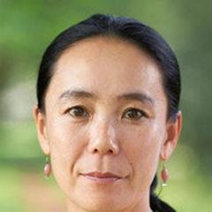

1969'da Nara'da doğan ve büyük halası tarafından yetiştirilen Naomi Kawase, ilk 35mm uzun metrajlısı Suzaku'dan (1997) önce ailesi hakkında otobiyografik belgeseller yaptı; film Cannes'da Caméra d'Or'u kazandı ve onu en genç kazanan yaptı. Sıklıkla amatör oyuncularla mekânda çekim yapar, üslubu "belgeselci bakışlı kurmaca" olarak tanımlanır. The Mourning Forest (2007) Cannes'da Büyük Ödül'ü kazandı; daha sonra Still the Water (2014), Sweet Bean (2015), Radiance (2017) ve True Mothers'ı (2020) yaptı. 2022'de bir dergi, set sırasında bir kamera asistanına tekme attığını yazdı; o bunu inkâr etmedi.
Filmografi
- Embracing (1992)
- Suzaku (1997)
- The Mourning Forest (2007)
- Hanezu (2011)
- Still the Water (2014)
- Sweet Bean (2015)
- Radiance (2017)
- True Mothers (2020)